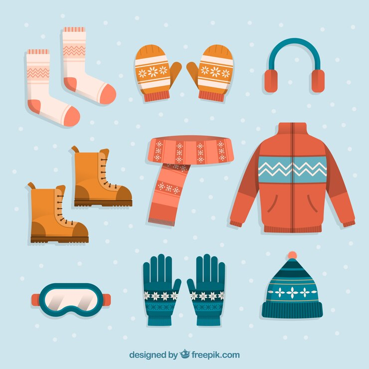

Special Considerations
If there is a baby traveling in the car usually the standard diaper bag is sufficient for the trip however make sure to have extra:
Formuala/baby food Bottles Diapers Diaper cream Wipes Clothing

If a pet is part of the family consider adding additional:
Pet food Water Feeding and watering bowls Leash Chew toy

Winter/summer kit
There are some items that need to be added to your kit in order to help survive in extreme climates. Some of those items are:
Ice scraper Shovel Sand to aid in tire traction Hand/foot warmers Rain gear Battery powered fan Sunblock Headgear Insect repellent
